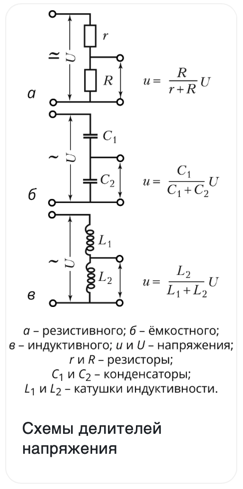

Делитель напряжения - это устройство, которое позволяет снимать часть имеющегося напряжения электрической цепи. Как правило, оно состоит из резисторов, конденсаторов или катушек индуктивности.
Основная характеристика – коэффициент деления. Она определяется отношением входного напряжения к выходному.
Чтобы собрать простейши делитель напряжения, достатточно присоединить последовательно два резистора.

В делителях напряжения высокой точности применяют резисторы с малым температурным коэффициентом сопротивления и высокой временной стабильностью (например, из манганиновой проволоки). В цепях переменного тока, помимо резистивных делителей напряжения, используются также ёмкостные с конденсаторами постоянной или переменной ёмкости (рис. б) и индуктивные (рис. в).
Делители напряжения могут быть однопредельными (с одним номинальным K) и многопредельными (иметь несколько входов или выходов); с постоянным и регулируемым (плавно, дискретно или комбинированным способом) отношением плеч. Плавно регулируемый резистивный делитель напряжения также называют потенциометром.
Делители напряжения входят в состав многих средств измерения в качестве звена измерительной цепи. Например, резистивные делители с номинальными значениями K, равными 10, 100 и1000, применяются во входных цепях многопредельных аналоговых и цифровых вольтметров. Ёмкостные делители напряжения, состоящие из нескольких последовательно соединённых конденсаторов высокой точности, служат для отбора мощностей от линий электропередачи высокого напряжения (до500кВ). Примером делителя напряжения на индуктивных сопротивлениях является автотрансформатор.
Делители напряжения используются в радио- и электротехнике, измерительной и вычислительной технике ит.д.